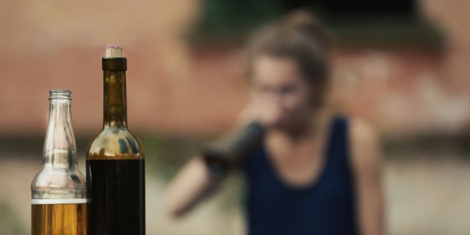

Kenakalan Remaja Minuman Keras
Kenakalan remaja merupakan salah satu masalah sosial yang sering kali membuat khawatir banyak pihak, baik keluarga, sekolah, maupun masyarakat. Masa remaja adalah periode transisi yang penuh dengan pencarian jati diri dan pembentukan karakter. Dalam proses ini, remaja cenderung mencari cara untuk mengekspresikan diri dan diterima oleh kelompok sosial mereka. Sayangnya, dalam beberapa kasus, pencarian ini membawa mereka ke perilaku yang merugikan diri sendiri dan orang lain. Salah satu bentuk kenakalan yang paling mencolok adalah penyalahgunaan minuman keras atau alkohol.
Minuman keras sering kali dipandang sebagai simbol kebebasan atau kedewasaan oleh sebagian remaja. Pengaruh lingkungan, rasa ingin tahu, serta tekanan dari teman sebaya membuat mereka tergoda untuk mencoba alkohol, tanpa memahami sepenuhnya akibatnya. Meskipun alkohol adalah substansi yang legal di banyak tempat, dampaknya terhadap remaja bisa sangat merusak, baik dari sisi fisik, mental, maupun sosial.
Masalah ini semakin rumit ketika remaja yang terlibat dalam penyalahgunaan alkohol tidak mendapatkan pengawasan yang cukup dari keluarga atau masyarakat. Kenakalan remaja yang melibatkan minuman keras tidak hanya berisiko bagi kesehatan mereka, tetapi juga bisa memengaruhi masa depan mereka. Penyalahgunaan alkohol di usia muda bisa mengarah pada berbagai masalah kesehatan jangka panjang, gangguan emosional, dan bahkan perilaku kriminal.
Penting untuk dipahami bahwa kenakalan remaja yang melibatkan alkohol bukanlah fenomena yang bisa dianggap sepele. Ini adalah masalah serius yang memerlukan perhatian lebih dari semua pihak terkait, mulai dari orang tua, guru, hingga masyarakat luas. Menghadapi masalah ini membutuhkan pemahaman yang mendalam mengenai faktor-faktor penyebabnya, dampaknya, dan tentunya langkah-langkah konkret untuk mencegah serta mengatasinya.